Line, Arc, Rect
-
Drawing tools in CAD enable precise creation and manipulation of geometric elements.
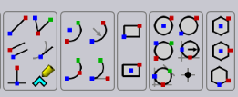
Line Tool (EX: Poly line, tangent line, construction line)
Create a vertical, horizontal or inclined line in graphics window. User Interface
-
Toolbar Icon: Icon for the line tool.
-
Parameters: Length, angle, and starting point specified via mouse click or coordinate input. Interaction
-
Mouse click to set the starting point.
-
Drag to specify the endpoint or use keyboard input for precise coordinates.
-
Visual feedback during dragging to preview the line.
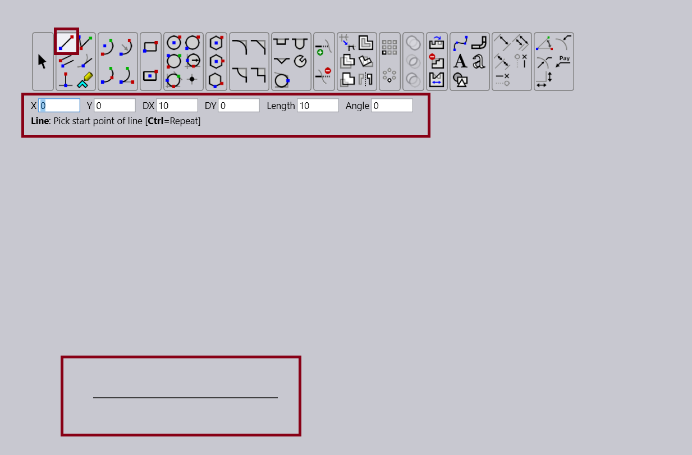
Parallel line
Create line in graphics window, either vertical, horizontal or inclined line. User Interface
-
Toolbar Icon: Icon for the Parallel line tool.
-
Parameters: Length, Delta 1, Delta 2 and starting point specified via mouse click or coordinate input. Interaction
-
Click a line and drag it to create a parallel line. To make parallel lines on both sides of the line, press ctrl key and drag Algorithm
-
For each of the point in a line the coordinate is shifted by following the below formulation:
-
Where, d = Distance between parallel lines
-
\(\mathbf{\theta}\) = slope angle
-
\(\mathrm{\Delta}\mathbfX\) = shift in X
-
\(\mathrm{\Delta}\mathbfY\) = shift in Y
Perpendicular line
Create line in graphics window, either vertical, horizontal or inclined line. User Interface
-
Toolbar Icon: Icon for the perpendicular line tool.
-
Parameters: Length. Interaction
-
Mouse click to set the starting point.
-
Drag to specify the endpoint or use keyboard input for precise coordinates.
-
Visual feedback during dragging to preview the line.
Circle Tool
Draw circles by specifying the Center and Radius. User Interface
-
Toolbar Icon: Icon for the circle tool.
-
Parameters: Radius and centre specified via mouse click or coordinate input.
Interaction
-
Mouse click to set the centre point.
-
Drag to set the radius or use keyboard input for precise dimension.
-
Visual feedback during dragging to preview the circle.
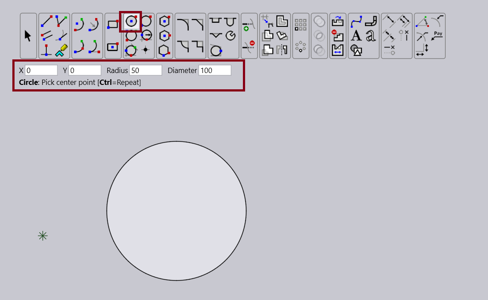
Arc Tool (ex. centre point,2-point ,3-point, tangent methods)
Draw arcs by specifying the Center and Radius. User Interface
-
Toolbar Icon: Icon for the centre point arc.
-
Parameters: Radius and centre specified via mouse click or coordinate input. Interaction
-
First, click to set the centre point, then the start points (determining the radius), and finally the end point in a counterclockwise manner.
-
Holding Ctrl while clicking sets the centre point for a similar arc to the last one drawn.
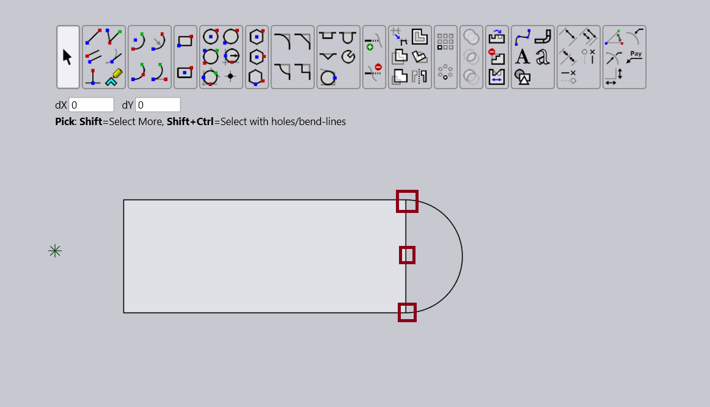
Rectangle Tool (ex. centre point rectangle)
Draw rectangle by specifying the width and height. User Interface
-
Toolbar Icon: Icon for the rectangle.
-
Parameters: Position, width and height specified via mouse click or coordinate input. Interaction
-
Two clicks to set two opposite corners.
-
Entering negative values for Width and Height will draw the rectangle to the left and below the first corner.
-
Hold Ctrl and click to repeat the last rectangle.
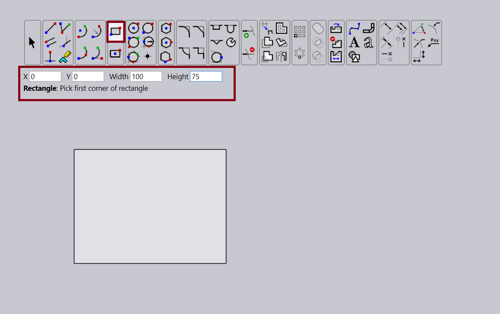
Geometric elements
 Line
Line
To draw a line using this tool, click on the two points that should form the endpoints of the line. As with all tools, all geometric snaps can be used when you click with the mouse. You can also enter the coordinates into the input bar to create the line. If you are using the input bar, you can type the starting point of the line into the X and Y boxes. Then, the other point can be determined in these ways:
-
Enter the dX and dY values and will compute the other endpoint point and draw the line.
-
Enter the Length and Angle (slope) of the line, and will compute the other endpoint and draw the line.
You can use a mixture of mouse input and typing in values into the input bar. For instance, you can click with the mouse to set the first point of the line ( will update the X and Y input boxes with the coordinates you just provided with the mouse), and then enter the dX and dY values into the input boxes to set the other point of the line. You can also use other combinations like entering the dX and Length. will compute the other two values (dY and Angle) and draw the line.
Repeating a previous line
In the Line mode, you can see the prompt bar indicating that CtrlCopy Previous. If you click with the Ctrl key held down, creates a new line with the same length and slope as the previous line drawn. The point where you click is used as the start point of the line, and will not prompt you for the endpoint of the line. This shortcut can be used when you are drawing a lot of similar lines, at different points in your drawing.
Drawing perpendicular lines with the line tool
Using the line tool, you can draw a line perpendicular to a given line or arc, passing through a point on the line or arc. To do this, choose the Line tool, and enter only the Length parameter. (The other parameters can be left as they are). Then, holding down the Shift key, click at the point on the line or arc where you want to construct the perpendicular line. will construct a perpendicular line at the specified point. The perpendicular line is made towards the side of the line or arc that you click. So you can click slightly to the left or slightly to the right of the line or arc to make the line perpendicular in that direction.
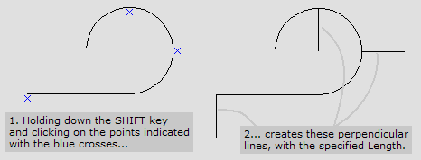
Drawing a tangent line with the line tool
You can use the line tool to draw a tangent to an arc or a circle, at a given point. To do this, choose the Line tool and enter only the Length parameter. The other parameters are not used, and does not need to be typed in. Then, holding down the Alt key, click at the point on the arc at which you want to construct the tangent line. will construct the tangent line at the specified point. If the tangent line is not in the direction that you want, you can make a back-tangent, by holding down the Shift+Alt keys at the same time when you click.
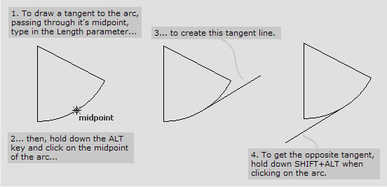
Drawing a line tangential to two arcs
The Line tool has a special assist mode to help you draw a line that is tangential to two arcs. (In this case, using any of the other modes of drawing this line is difficult, since both the endpoints of the line are not known, and depend on the tangency relationship). To use this mode, switch to the Line tool, and move near the arc until you get an on snap. (If you get an endpoint, midpoint or other snap, move further along the arc until the on snap appears). Click to set the first point of the line. Then, move the mouse in an approximately tangential direction to the arc. will understand that you want to draw a tangent line, and will start sliding the first point along the arc, always maintaining tangency to the current mouse position. Drag until you get a tangent snap on the other arc or circle, and click again to set the line in position.
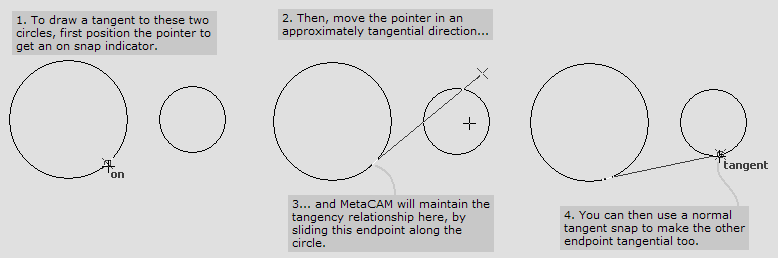
Drawing a line perpendicular to an arc, and tangential to another
Like a two-arc tangent, this mode also requires some special assistance, since both the endpoints of the line must be floating until the tangency relationship is established. To draw this type of line, move near the arc until you get an on snap indicator. Then, move in an approximately perpendicular direction to the arc.
will understand that you want to draw a perpendicular line, and will start sliding the first point on the arc maintaining perpendicularity to the current mouse position. Now you can move until you get a tangent snap on the other arc or circle, and click again to create the line.
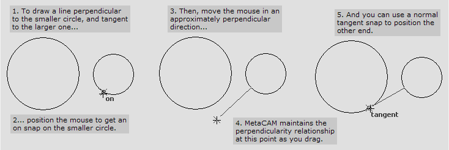
Absolute mode
If the Use absolute mode for drawing tools setting is turned on in the [.underline]# Options/2D Editor# dialogue, prompts with absolute coordinates for both endpoints of the line (X1, Y1, X2, Y2) instead of relative coordinates (X, Y, DX, DY).
Created with the Personal Edition of HelpNDoc: Easily create CHM Help documents
Connected Lines
Connected Lines
This tool is used to draw a series of connected line or arc segments. Each line or arc is drawn starting from the endpoint of the previous line or arc. Arcs are drawn by holding down the Ctrl key as you drag, and start off at a tangent to the previously drawn segment. (Therefore, at least one line segment must be drawn before you can draw an arc using the Ctrl key). Here’s an example of one way to draw a rounded rectangle using the Connected Lines tool:
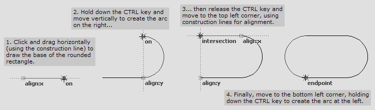
Typing in coordinates
You can type in coordinates into the X, Y, DX, DY, Length or Angle input boxes (just as with the Line tool) to create connected lines. Each time you create a line segment, the end point of that segment is automatically entered in as the start coordinate for the next segment.
Starting a new polyline
To break off this polyline and start a fresh one, click with the right mouse button.
Created with the Personal Edition of HelpNDoc: Full-featured EPub generator
Parallel Line
Parallel Line
You can use this tool to make a line parallel to an existing line in the drawing. Click on the line, drag and click again to make the copy. Here’s an example, that shows how to make a line parallel to the horizontal edge of the rectangle, and passing through the corner of the diamond shaped figure.
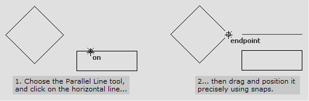
Creating a parallel line at a specified distance from a given line
You can also click on the line, type in a value in the Distance input box and press Enter to make a parallel line. The position of the mouse pointer when you press Enter is used to decide which side of the original line the new line is created. If the mouse pointer is to the left of the original line, the new line is also created on the left. You can use the Delta 1 and Delta 2 parameters to alter the length of the parallel line as it is being created. Positive values extend the line, while negative values shrink it.
Creating arbitrary length lines
If you turn on the Parallel line tool makes arbitrary length lines option in the [.underline]# Options/2D Editor# dialogue, this command work slightly differently. It makes an infinite line parallel to the selected line segment, and you can then use two additional mouse clicks to mark off the part of the line that you want to keep.
Created with the Personal Edition of HelpNDoc: Produce Kindle eBooks easily
Perpendicular Line
Perpendicular Line
Use this tool to create a line perpendicular to an existing line or arc. There are two ways to create the perpendicular line. If you type in a non-zero length for the perpendicular line, you have to use 3 mouse clicks to create the perpendicular line, as shown in the illustration below. With this method, you can hold down the Ctrl key to extend the perpendicular line to both sides of the target segment.
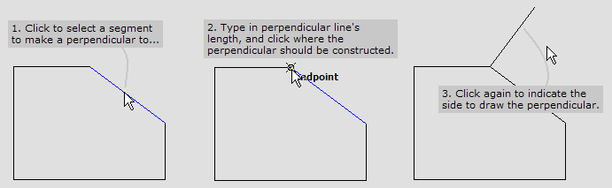
If you specify a length of 0, then it takes only two mouse clicks to create the perpendicular line because the second mouse click indicate both the pass-through point, as well as the length of the line.
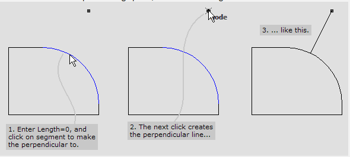
Created with the Personal Edition of HelpNDoc: Generate EPub eBooks with ease
Filleted/Chamfered Line
Filleted/Chamfered Line
This tool is used to create polylines that are automatically filleted or chamfered at every corner. Every time you add a new line to the polyline, the preceding corner is filleted or chamfered. To add a chamfer, enter a positive value in the Chamfer input box, and set the Fillet input box to 0. To add a fillet, enter an positive value in the Fillet input box, and set the Chamfer input box to 0. If you close the polyline by joining back to the starting point, both ends of the last line segment you added will be filleted or chamfered. Here’s an example:
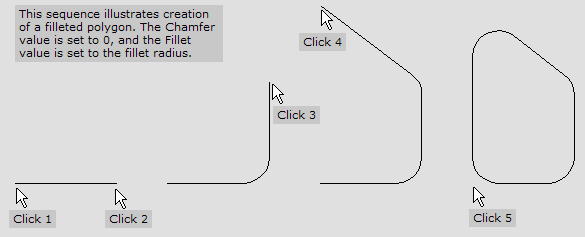
Using absolute mode
By default, this tool prompts for inputs similar to the Line tool. So, you can enter segments by either entering their DX and DY, or by entering their Length and Angle. However, if you turn on the Use absolute mode for drawing tools setting in the [.underline]# Options/2D Editor# dialogue, prompts for the absolute endpoints of each segment (EX and EY).
Created with the Personal Edition of HelpNDoc: Full-featured Kindle eBooks generator
Tangent/Angle Line
Tangent/Angle Line
You can use this tool to create a line that is tangential to given arc or circle, and with a specified angle (slope). First input the length and the angle that the line makes with the X axis. Then, click near the arc or circle to indicate the tangent entity. There are two possible lines that can be drawn tangential to a given circle and with a given angle (slope). chooses the line to draw based on the point you click on. Here’s an example.
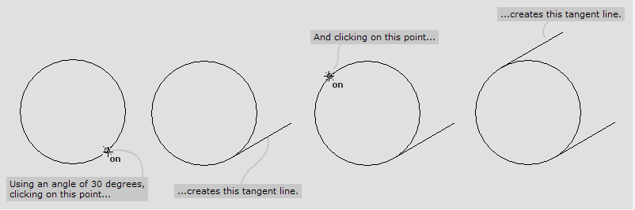
Created with the Personal Edition of HelpNDoc: iPhone web sites made easy
Rectangle
Rectangle
This tool is used to create rectangles. Click twice to set the two opposite corners of the rectangle, which is always drawn aligned with the X and Y axes. If you are typing in the Width and Height into the input boxes, remember that typing in negative values will cause the rectangle to be created to the left and below the first corner point.
Repeating the last rectangle
Hold down the Ctrl key and click to draw another rectangle with the same size as the one last drawn with this tool.
Rotated coordinate systems
If the Shift Origin tool has been used to set up a rotated coordinate system, the edges of the rectangle are aligned with rotated X and Y axes.
Created with the Personal Edition of HelpNDoc: Free CHM Help documentation generator
Centre-Point Rectangle
Centre-Point Rectangle
This tool is used to draw rectangles when it is easier to fix a centre point than a corner point. The first click sets the centre point, and the second click is one of the four corner points. Here’s an example, where we want to draw a rectangle inscribed within the circle, with the same height as the small rectangle by the side of the circle.
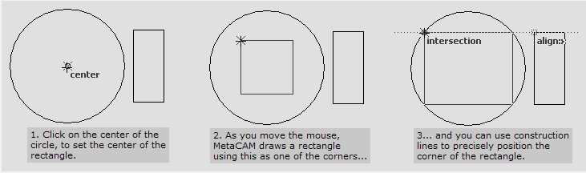
Repeating the last rectangle
Hold down the Ctrl key and click to draw another rectangle with the same size as the one last drawn with this tool.
Rotated coordinate systems
If the Shift Origin tool has been used to set up a rotated coordinate system, the edges of the rectangle are aligned with rotated X and Y axes.
Created with the Personal Edition of HelpNDoc: Easily create HTML Help documents
Circle
Circle
This tool is used to create circles by specifying their centre point and radius. The first click of the mouse sets the centre point of the circle, and the second click sets the radius. You can also click to set the centre point, and then type in a value in the Radius input box, and press Enter to make the circle.
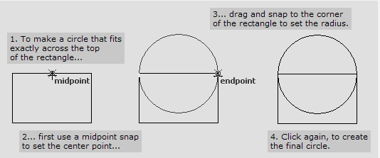
Repeating the last circle
If you hold down the Ctrl key when you click to set the centre point, a circle is created using the same radius as the last circle created with this tool.
Using diameter instead of radius
If you have turned on the Use diameter for circle drawing tools setting in the [.underline]# Options/2D Editor# dialogue, prompts for the diameter of the circle, instead of the radius.
Created with the Personal Edition of HelpNDoc: Easy EPub and documentation editor
2-Point Circle
2-Point Circle
Use this tool to draw a circle that has a known radius, and passes through two given points. It can also be used to draw circles where the two give points line on opposite ends of a diameter. If the Radius input box is set to 0, the two points entered are considered the endpoints of a diameter. The centre point lies at the midpoint of these two points, and the circle is drawn to pass through the two points. If the Radius value is non-zero, a circle with the specified radius, and passing counter-clockwise through the two specified points is drawn. Here is an example of how to draw a circle, if we know two points that lie on a diameter.
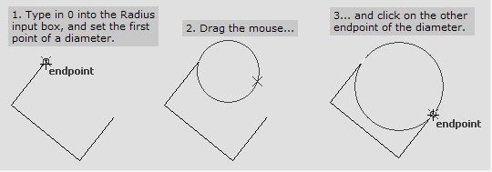
In this example, a non-zero radius is used to construct a circle passing through two points. (The two arms of the L shaped figure are both of length 10, and the circle’s radius is also set to 10):
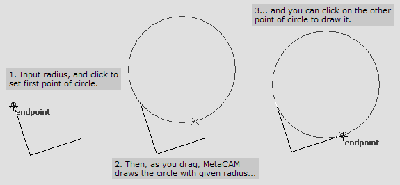
Repeating the last circle
If you hold down the Ctrl key when you click to set the first point, creates a circle similar to the previous one created with this tool.
Using diameter instead of radius
If you have turned on the Use diameter for circle drawing tools setting in the [.underline]# Options/2D Editor# dialogue, prompts for the diameter of the circle, instead of the radius.
Created with the Personal Edition of HelpNDoc: Create iPhone web-based documentation
3-Point Circle
3-Point Circle
Used to draw a circle passing through three given points. will compute the centre of the circle, and its radius, and create the circle. The three points you click on should not line in a straight line; in this case, will not construct the circle. Here is an example, that shows how to construct a circle passing through the 3 points of the arrow-shaped figure.
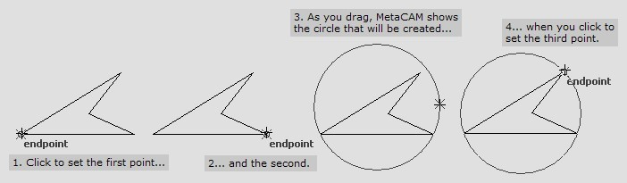
Repeating the last circle
If you hold down the Ctrl key when you click on the first point, a similar circle to the last circle you drew is created.
Created with the Personal Edition of HelpNDoc: iPhone web sites made easy
Point
Point
The Point tool is used to create point entities. These are usually used to indicate pierce-only points for the laser-tooling module, or mark inner-holes into which other parts can be packed by the nesting engine. To create a point entity, click on the place where it is to be placed, or type in the X and Y coordinate and press Enter.
Created with the Personal Edition of HelpNDoc: Full-featured EPub generator
Centre-Point Arc
Centre-Point Arc
You can use this tool to draw an arc by specifying its centre point, start point and the end point. The first click of the mouse sets the centre point. The second click fixes the start point (and therefore the radius) of the arc. The third point determines the end point. The arc is always drawn counter-clockwise from the start point to the end point. (If the end point you specify is not at the same distance from the centre as the start point is, constructs an imaginary line from the centre to the end point, and stops the arc where it would meet this imaginary line.). Here’s an example that shows how to draw a semicircular cap for a rectangle.
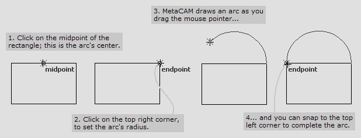
Repeating the last arc
You can draw an arc similar to the one last drawn with this tool, by holding down the Ctrl key when you click to set the centre point.
Created with the Personal Edition of HelpNDoc: Full-featured EBook editor
2-Point Arc
2-Point Arc
This tool is used to draw an arc given the start point, end point and the radius of the arc. The arc is drawn counter-clockwise from the start point to the end point. To draw the arc, enter the radius, then click twice to set the start and end points of the arc. If the distance between the two points you clicked on is more than 2 times the radius, the radius is increased to make the arc possible.
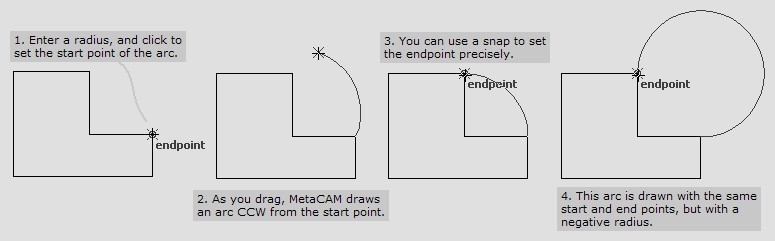
Drawing a major arc
This tool normally draws a minor arc with the given radius (less than 180°of span). If you enter a negative value for the radius, this tool draws a major arc (more than 180° of span).
Repeating the last arc
You can draw an arc similar to the one last drawn with this tool, by holding down the Ctrl key when you click to set the start point.
Created with the Personal Edition of HelpNDoc: Benefits of a Help Authoring Tool
3-Point Arc
3-Point Arc
Use this tool to draw an arc that passes through three points. The arc starts at the first point, passes through the second, and stops at the third. These points must not lie in a straight line. Here’s an example, that shows how to draw a semicircular cap for a right-angled triangle.
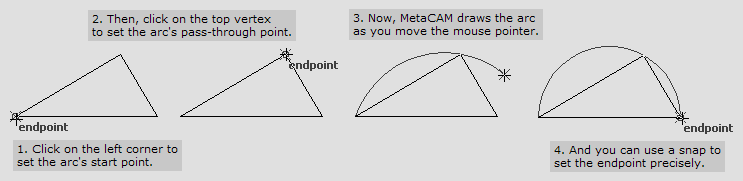
Repeating the last arc
You can draw an arc similar to the one you draw last with this tool, by holding down the Ctrl key when you click to set the first point.
Created with the Personal Edition of HelpNDoc: Free help authoring tool
Tangent-Point Arc
Tangent-Point Arc
If you know the start point, end point and starting direction of an arc, you can use this tool to draw it. The first click sets the start point, the second click sets the starting angle, and the third click sets the endpoint of the arc. Here’s an example, that uses the Tangent-Point Arc tool to draw a semicircular cap for an inclined rectangle.
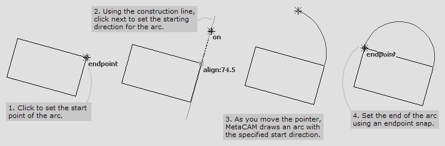
Repeating the last arc
You can draw an arc similar to the one you draw last with this tool, by holding down the Ctrl key when you click to set the first point.
Created with the Personal Edition of HelpNDoc: Free help authoring environment
2-Tangent Circle
2-Tangent Circle
This tool draws a circle tangential to two given lines or arcs. The radius must be entered first in the Radius input box. Then click on the two lines or arcs that the circle should be tangential to. Since there is more than one circle that can be drawn tangential to two given lines, the point where you click will determine where the circle is constructed. Here is an example, that shows two different 2-tangent circles that can be created with the same input entities, by using different click-points.
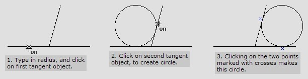
Using a pass-through point
You can create a circle that is tangential to a given line or arc, and passing through another point. To do this, indicate the first tangential entity in the usual manner, and then hold down the Ctrl key while you click on the other pass-through point.
Using diameter instead of radius
If you have turned on the Use diameter for circle drawing tools setting in the 2D-Editor page of the Options dialogue, prompts for the diameter, instead of the radius.
Created with the Personal Edition of HelpNDoc: Easily create HTML Help documents
3-Tangent Circle
3-Tangent Circle
This tool is used to draw a circle tangential to three existing entities. There are often several possible circles that can be drawn tangential to three entities. For example, if the three entities selected are themselves circles which are non-intersecting, there are 8 possible circles that can be drawn. The points where you click decide which of these possible circles is actually drawn. The one that is drawn is the one that is closest to all the three points you select.
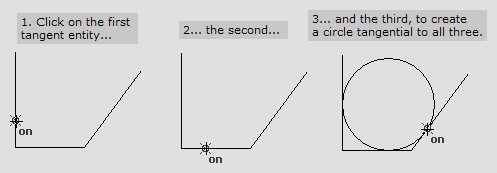
This example shows how the points where you click determines which circle is constructed. The small crosses indicate the points where the circles were clicked upon, to create the blue circle in each case.

Using pass-through points
There is a CtrlPass-through point option for the 2nd and 3rd inputs to the 3-tangent circle command. You can create a circle with 1 or 2 pass-through points using these options. All combinations of lines and arcs are supported for the tangent objects. Here are some examples of circles that were created using these options.
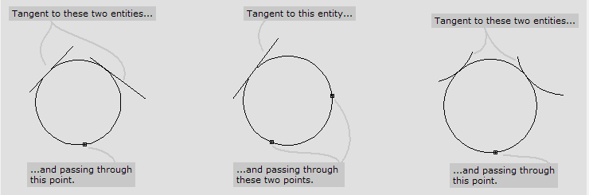
Created with the Personal Edition of HelpNDoc: Write EPub books for the iPad
3-Segment Fillet
3-Segment Fillet
This tool is used to create a fillet that is tangential to three consecutive line segments in a polyline. Since there are three tangents, the curve is completely defined and no further inputs (such as radius) are required. To create the fillet, click on the middle segment of the three consecutive segments to be filleted.
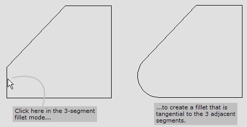
If either of the two flanking segments is not long enough, the fillet cannot be constructed.
Created with the Personal Edition of HelpNDoc: Free iPhone documentation generator
Inscribed Polygon
Inscribed Polygon
This tool is used to draw a regular polygon, when you know the radius of its inscribing circle (that is, the distance from the centre of the polygon to a vertex). Fill in the number of sides of the polygon into the input bar. Then, set the centre point either using the mouse or by typing in the coordinates. The Radius input box specifies the radius of the inscribing circle, and the Angle input box gives the angular position of the first vertex with respect to the centre.
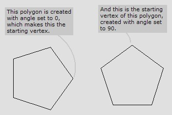
Repeating the last polygon
Hold down the Ctrl key and click to draw another polygon similar to the last one drawn.
Created with the Personal Edition of HelpNDoc: Free CHM Help documentation generator
Circumscribed Polygon
Circumscribed Polygon
This tool is used to draw regular polygons when the radius of the circumscribed circle is known (that is, the distance from the centre of the polygon to the midpoint of an edge). With this tool, the Angle input box sets the angle between the centre, and the midpoint of the first edge. For example, here is an equilateral triangle, drawn with an Angle setting of 45º. You can see that the midpoint of the first edge is at an inclination of 45º from the centre point.
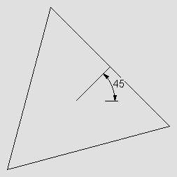
Repeating the last polygon
Hold down the Ctrl key and click to draw another polygon similar to the last one drawn.
Edge Polygon
Edge Polygon
The Edge Polygon tool is used to construct a polygon on a given edge. The two clicks define two consecutive vertices of the polygon, in the counter-clockwise direction, and the rest of the polygon is constructed correspondingly. Here is an example, where a hexagon is constructed on the top right edge of the rectangle.
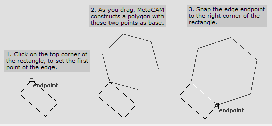
Repeating the last polygon
Hold down the Ctrl key and click to draw another polygon similar to the last one drawn.